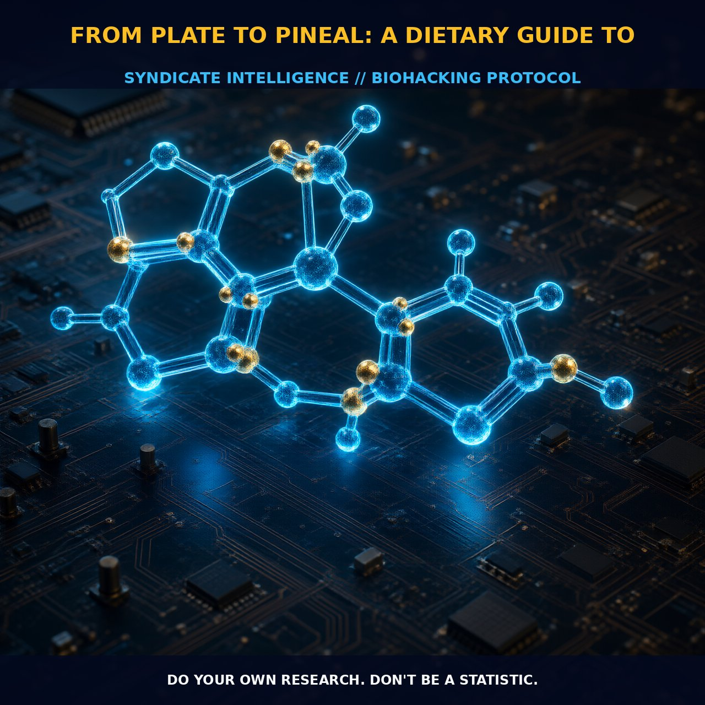

Enhancing Dream Quality Through Dietary Tryptophan

1. The Mechanism
The process of converting dietary tryptophan into serotonin and melatonin, the 'Spirit Molecules' of the brain, begins in the digestive system. When you consume high-tryptophan foods such as cheese, oats, and nuts, the tryptophan is absorbed into the bloodstream.
Once in the blood, it competes with other amino acids to cross the blood-brain barrier and enter the brain. Inside the brain, tryptophan is converted into serotonin through the action of the enzyme tryptophan hydroxylase. Serotonin then acts as a precursor to melatonin, the hormone that regulates sleep and dreaming, via the action of the enzyme arylalkylamine N-acetyltransferase (AANAT) and hydroxyindole-O-methyltransferase (HIOMT).
The conversion of tryptophan to serotonin and melatonin involves several enzymatic steps. Tryptophan hydroxylase converts tryptophan into 5-hydroxytryptophan (5-HTP), which is then decarboxylated by aromatic L-amino acid decarboxylase (AADC) to form serotonin. Serotonin is then converted to melatonin by AANAT, which adds an acetyl group to serotonin to form N-acetylserotonin, which is then methylated by HIOMT to form melatonin. This intricate process is crucial for the modulation of sleep and dreaming, as melatonin regulates the circadian rhythm and supports the onset of REM sleep, the stage of sleep where vivid dreams occur.
2. Biological Leverage
Enhancing the production of serotonin and melatonin through dietary tryptophan can have a profound impact on the quality and vividness of dreams. High-tryptophan foods like cheese, oats, and nuts provide a rich source of tryptophan, which can be converted into serotonin and melatonin through the enzymatic pathways discussed earlier.
The inclusion of these foods in your evening meals can elevate tryptophan levels, facilitating the conversion to serotonin and melatonin, thereby promoting a state of relaxed alertness and enhanced dreaming. For example, cheese is a rich source of tryptophan, and its high-fat content can slow down gastric emptying, allowing for a steady release of tryptophan into the bloodstream. Oats are also a good source of tryptophan and contain complex carbohydrates that can stimulate the release of insulin, which in turn promotes the uptake of tryptophan into the brain.
Nuts, particularly almonds and walnuts, provide a good balance of fats and proteins, which can help maintain steady tryptophan levels and support the conversion to serotonin and melatonin. In addition to these foods, incorporating magnesium and potassium citrate can further enhance the effects of tryptophan. Magnesium acts as a cofactor for the enzyme tryptophan hydroxylase, supporting the conversion of tryptophan to 5-HTP, while potassium citrate helps to balance the quality of sleep and reduce nocturnal spasms, which can interfere with the onset of REM sleep.
Ensuring adequate intake of calcium and vitamin B6 can also facilitate the absorption and metabolism of tryptophan, further enhancing its conversion to serotonin and melatonin.
3. Tactical Implementation
To optimize the production of serotonin and melatonin through dietary tryptophan, it is recommended to consume high-tryptophan foods about 1 to 2 hours before bedtime. For example, you can enjoy a cheese and nut snack or a bowl of oatmeal with almonds and walnuts. These foods provide a rich source of tryptophan, which can be converted into serotonin and melatonin, supporting the onset of REM sleep and enhancing the vividness of dreams.
It is also important to consider the synergistic effects of magnesium and potassium citrate. Consuming magnesium-rich foods such as dark leafy greens, nuts, and seeds, along with potassium citrate, can help balance the quality of sleep and reduce nocturnal spasms. Additionally, incorporating calcium and vitamin B6 can enhance the absorption and metabolism of tryptophan, further supporting the conversion to serotonin and melatonin.
Stacking tryptophan-rich foods with relaxing adaptogens such as reishi mushroom, holy basil, and ashwagandha can further enhance the effects. These adaptogens support the nervous system and promote relaxation, making it easier to fall asleep and enter the dream state. Theanine, found in green tea, can also be helpful for falling asleep as it increases alpha waves, promoting a relaxed state conducive to dreaming.
Prostar Life Hack
To enhance your dream state, consume high-tryptophan foods such as cheese, oats, and nuts about 1 to 2 hours before bedtime. Include magnesium and potassium citrate to balance sleep quality and reduce spasms, and stack with relaxing adaptogens like reishi mushroom, holy basil, and ashwagandha.
[ AUTHOR: LEAD TECHNICAL RESEARCHER ]